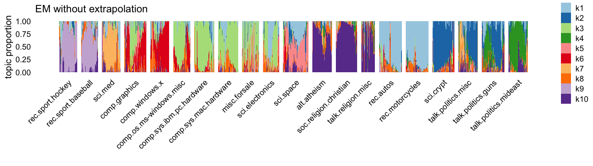
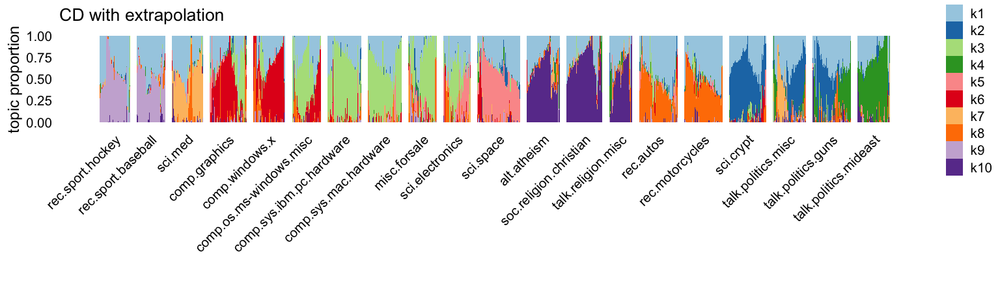

Last updated: 2024-08-08
Checks: 7 0
Knit directory:
fastTopics-experiments/analysis/
This reproducible R Markdown analysis was created with workflowr (version 1.7.1). The Checks tab describes the reproducibility checks that were applied when the results were created. The Past versions tab lists the development history.
Great! Since the R Markdown file has been committed to the Git repository, you know the exact version of the code that produced these results.
Great job! The global environment was empty. Objects defined in the global environment can affect the analysis in your R Markdown file in unknown ways. For reproduciblity it’s best to always run the code in an empty environment.
The command set.seed(1) was run prior to running the
code in the R Markdown file. Setting a seed ensures that any results
that rely on randomness, e.g. subsampling or permutations, are
reproducible.
Great job! Recording the operating system, R version, and package versions is critical for reproducibility.
Nice! There were no cached chunks for this analysis, so you can be confident that you successfully produced the results during this run.
Great job! Using relative paths to the files within your workflowr project makes it easier to run your code on other machines.
Great! You are using Git for version control. Tracking code development and connecting the code version to the results is critical for reproducibility.
The results in this page were generated with repository version 4c90df6. See the Past versions tab to see a history of the changes made to the R Markdown and HTML files.
Note that you need to be careful to ensure that all relevant files for
the analysis have been committed to Git prior to generating the results
(you can use wflow_publish or
wflow_git_commit). workflowr only checks the R Markdown
file, but you know if there are other scripts or data files that it
depends on. Below is the status of the Git repository when the results
were generated:
Ignored files:
Ignored: analysis/.sos/
Ignored: data/20news-bydate/
Ignored: data/droplet.RData
Ignored: data/nips_1-17.mat
Ignored: data/pbmc_68k.RData
Ignored: output/droplet/fits-droplet.RData
Ignored: output/droplet/lda-droplet.RData
Ignored: output/newsgroups/de-newsgroups.RData
Ignored: output/newsgroups/fits-newsgroups.RData
Ignored: output/newsgroups/lda-newsgroups.RData
Ignored: output/newsgroups/rds/
Ignored: output/nips/fits-nips.RData
Ignored: output/nips/lda-nips.RData
Ignored: output/pbmc68k/fits-pbmc68k.RData
Ignored: output/pbmc68k/rds/
Untracked files:
Untracked: analysis/lda-eb-newsgroups-em-k=10.rds
Untracked: analysis/lda-eb-newsgroups-scd-ex-k=10.rds
Untracked: analysis/lda-newsgroups-em-k=10.rds
Untracked: analysis/lda-newsgroups-scd-ex-k=10.rds
Untracked: analysis/maptpx-newsgroups-em-k=10.rds
Untracked: analysis/maptpx-newsgroups-scd-ex-k=10.rds
Untracked: plots/
Note that any generated files, e.g. HTML, png, CSS, etc., are not included in this status report because it is ok for generated content to have uncommitted changes.
These are the previous versions of the repository in which changes were
made to the R Markdown (analysis/newsgroups_more.Rmd) and
HTML (docs/newsgroups_more.html) files. If you’ve
configured a remote Git repository (see ?wflow_git_remote),
click on the hyperlinks in the table below to view the files as they
were in that past version.
| File | Version | Author | Date | Message |
|---|---|---|---|---|
| Rmd | 4c90df6 | Peter Carbonetto | 2024-08-08 | workflowr::wflow_publish("newsgroups_more.Rmd", verbose = TRUE) |
| Rmd | 7969f43 | Peter Carbonetto | 2024-08-07 | Working on new ‘newsgroups_more’ analysis. |
| html | a72103c | Peter Carbonetto | 2024-08-07 | First build of the newsgroups_more analysis. |
| Rmd | 269b84d | Peter Carbonetto | 2024-08-07 | workflowr::wflow_publish("newsgroups_more.Rmd") |
Here we take a closer look at some of the results on the newsgroups data.
Load the packages used in this analysis.
library(Matrix)
library(fastTopics)
library(ggplot2)
library(cowplot)
set.seed(1)Load the newsgroups data.
load("../data/newsgroups.RData")Load the topic models fit using the EM and CD algorithms
fit1 <- readRDS("../output/newsgroups/rds/fit-newsgroups-em-k=10.rds")$fit
fit2 <- readRDS("../output/newsgroups/rds/fit-newsgroups-scd-ex-k=10.rds")$fit
fit1 <- poisson2multinom(fit1)
fit2 <- poisson2multinom(fit2)and the LDA fits initialized using the EM and CD estimates:
lda1 <- readRDS("../output/newsgroups/rds/lda-newsgroups-em-k=10.rds")$lda
lda2 <- readRDS("../output/newsgroups/rds/lda-newsgroups-scd-ex-k=10.rds")$ldaThe MLEs and the approximate posterior estimates from LDA turn out to be very similar to each other, so there is really no need to examine both. Here we’ll focus on the LDA fits:
cor(as.vector(fit1$L),as.vector(lda1@gamma))
cor(as.vector(fit2$L),as.vector(lda2@gamma))
# [1] 0.9799571
# [1] 0.9790959Let’s now examine the LDA fits using Structure plots. Here is the EM-initialized model:
n <- nrow(fit1$L)
rows <- sample(n,2000)
L1 <- lda1@gamma[rows,]
topics <- factor(topics,
c("rec.sport.hockey",
"rec.sport.baseball",
"sci.med",
"comp.graphics",
"comp.windows.x",
"comp.os.ms-windows.misc",
"comp.sys.ibm.pc.hardware",
"comp.sys.mac.hardware",
"misc.forsale",
"sci.electronics",
"sci.space",
"alt.atheism",
"soc.religion.christian",
"talk.religion.misc",
"rec.autos",
"rec.motorcycles",
"sci.crypt",
"talk.politics.misc",
"talk.politics.guns",
"talk.politics.mideast"))
topic_ordering <- c(2:10,1)
topic_colors <- c("#a6cee3","#1f78b4","#b2df8a","#33a02c","#fb9a99",
"#e31a1c","#fdbf6f","#ff7f00","#cab2d6","#6a3d9a")
p1 <- structure_plot(L1,topics = 1:10,grouping = topics[rows],
colors = topic_colors,gap = 20) +
ggtitle("EM without extrapolation") +
theme(plot.title = element_text(face = "plain",size = 10))
p1
And here’s the CD-initialized model:
L2 <- lda2@gamma[rows,]
p2 <- structure_plot(L2,topics = 1:10,grouping = topics[rows],
colors = topic_colors,gap = 20) +
ggtitle("CD with extrapolation") +
theme(plot.title = element_text(face = "plain",size = 10))
p2
The most striking differences are in topics 1 and 8.
Let’s now extract some “keywords” for a few selected topics by taking words that are at higher frequency in the given topic compared to the other topics. For example, top keywords for topic 9 clearly relate to baseball, hockey and sports more generally:
k <- 9
dat <- data.frame(word = colnames(counts),
f0 = exp(apply(lda2@beta[-k,],2,max)),
f1 = exp(lda1@beta[k,]),
f2 = exp(lda2@beta[k,]))
subset(dat,f0 < 1e-5 & f2 > 1e-3)
# word f0 f1 f2
# 1815 baseball 2.810213e-26 0.0021858183 0.002558474
# 4306 teams 7.536962e-06 0.0014993384 0.001774011
# 7885 bos 1.246793e-74 0.0008952049 0.001047827
# 10219 players 7.288976e-09 0.0026286758 0.003076825
# 11252 fans 9.865409e-06 0.0015366619 0.001798602
# 26023 hockey 4.148975e-84 0.0028469414 0.003332311
# 26700 det 1.551769e-37 0.0009774498 0.001144093
# 26976 rangers 9.068849e-10 0.0009268376 0.001084851
# 27471 detroit 8.827394e-28 0.0010660214 0.001247765
# 32140 espn 9.498411e-85 0.0009489805 0.001110770
# 33823 nhl 6.136341e-96 0.0013412257 0.001569889The keywords for topic 1 seem to suggest a “background topic” that captures words that are not specific to any topic:
k <- 1
dat <- data.frame(word = colnames(counts),
f0 = exp(apply(lda2@beta[-k,],2,max)),
f1 = exp(lda1@beta[k,]),
f2 = exp(lda2@beta[k,]))
subset(dat,f0 > 1e-6 & f2/f0 > 5)
# word f0 f1 f2
# 482 sure 2.730490e-04 1.318745e-03 2.004453e-03
# 826 just 1.104558e-03 5.767521e-03 6.867431e-03
# 849 keeps 1.961181e-05 8.763595e-05 1.180887e-04
# 861 don 5.529651e-04 5.307603e-03 8.014937e-03
# 964 anything 3.229690e-04 1.166993e-03 1.667917e-03
# 1089 happens 5.230439e-05 2.730698e-04 3.664144e-04
# 1101 wouldn 6.308532e-05 6.959523e-04 8.960805e-04
# 1114 isn 1.972071e-04 8.741999e-04 1.220989e-03
# 1122 going 2.382043e-04 1.970294e-03 2.556936e-03
# 1194 doesn 3.761664e-04 1.107042e-03 1.897569e-03
# 1243 really 2.449082e-04 2.363712e-03 2.940275e-03
# 1247 shouldn 4.291797e-05 1.892965e-04 3.218838e-04
# 1343 doing 2.023907e-04 7.380913e-04 1.175773e-03
# 1408 thing 3.595447e-04 1.748767e-03 1.818889e-03
# 1485 maybe 1.340824e-04 1.142698e-03 1.410303e-03
# 1542 guess 1.235434e-04 6.294977e-04 9.066628e-04
# 1702 worse 3.962225e-05 2.558826e-04 3.919230e-04
# 1943 glad 2.335043e-05 1.191823e-04 1.503062e-04
# 2380 lot 2.851634e-04 1.214309e-03 1.541849e-03
# 2511 complain 9.458426e-06 1.175283e-04 1.060635e-04
# 2625 aren 7.708783e-05 4.339988e-04 6.015582e-04
# 2936 wasting 1.146139e-05 5.363071e-05 5.774432e-05
# 3643 bothered 7.647129e-06 3.171709e-05 6.446484e-05
# 4728 homework 2.154784e-06 1.071034e-05 1.376657e-05
# 6772 scary 9.308367e-06 4.636186e-05 5.272061e-05
# 7946 obnoxious 3.811318e-06 1.502948e-05 2.142934e-05
# 9386 squashed 1.336997e-06 9.301078e-06 7.420718e-06
# 11847 figuring 6.026327e-06 2.689538e-05 3.307360e-05
# 14900 enjoyable 1.284264e-06 5.932311e-06 6.961532e-06
# 34566 ranting 2.708701e-06 4.813397e-22 1.498063e-05
# 49753 gloster 1.088760e-06 1.966287e-25 5.751089e-06Finally, topic 8 is a topic that is quite noticeably different between the EM and CD estimates, and indeed based on the keywords, only the CD estimates produce a topic about cars and motorcycles, with keywords such as wheel, riding, bmw, etc:
k <- 8
dat <- data.frame(word = colnames(counts),
f0 = exp(apply(lda2@beta[-k,],2,max)),
f1 = exp(lda1@beta[k,]),
f2 = exp(lda2@beta[k,]))
subset(dat,f0 < 1e-5 & f2 > 5e-4)
# word f0 f1 f2
# 6685 wheel 2.926216e-06 2.574153e-48 0.0008890773
# 8379 riding 4.806729e-06 8.342523e-50 0.0010296821
# 8848 bmw 1.420484e-70 8.974584e-35 0.0014199092
# 10461 mustang 1.001845e-62 1.474671e-54 0.0005334919
# 10632 ford 6.054076e-09 9.614501e-05 0.0012188125
# 11034 helmet 7.566853e-06 6.205450e-57 0.0007346685
# 11456 di 6.241188e-07 7.696027e-04 0.0006960997
# 13843 mov 1.530331e-112 6.423834e-04 0.0005786335
# 14968 cx 1.896083e-06 5.944685e-04 0.0005342605
# 17351 ei 9.225139e-79 7.107221e-04 0.0006401903
# 18581 bike 4.785774e-57 1.148546e-61 0.0034348671
# 25666 motorcycle 6.819658e-06 4.778873e-48 0.0009843613
# 25691 toyota 6.852661e-34 1.203084e-46 0.0005293881
# 25947 honda 1.179594e-74 1.174884e-22 0.0009602854
# 26114 brake 4.286054e-06 5.328490e-92 0.0006481378
# 26116 tires 4.017934e-06 3.018378e-61 0.0007099675
# 27848 bikes 2.086974e-59 1.708530e-51 0.0008084454
# 27947 motorcycles 1.105482e-56 9.860881e-45 0.0005663222
sessionInfo()
# R version 4.3.3 (2024-02-29)
# Platform: aarch64-apple-darwin20 (64-bit)
# Running under: macOS Sonoma 14.5
#
# Matrix products: default
# BLAS: /Library/Frameworks/R.framework/Versions/4.3-arm64/Resources/lib/libRblas.0.dylib
# LAPACK: /Library/Frameworks/R.framework/Versions/4.3-arm64/Resources/lib/libRlapack.dylib; LAPACK version 3.11.0
#
# locale:
# [1] en_US.UTF-8/en_US.UTF-8/en_US.UTF-8/C/en_US.UTF-8/en_US.UTF-8
#
# time zone: America/Chicago
# tzcode source: internal
#
# attached base packages:
# [1] stats graphics grDevices utils datasets methods base
#
# other attached packages:
# [1] cowplot_1.1.3 ggplot2_3.5.0 fastTopics_0.6-184 Matrix_1.6-5
#
# loaded via a namespace (and not attached):
# [1] gtable_0.3.4 xfun_0.42 bslib_0.6.1
# [4] htmlwidgets_1.6.4 ggrepel_0.9.5 lattice_0.22-5
# [7] quadprog_1.5-8 vctrs_0.6.5 tools_4.3.3
# [10] generics_0.1.3 parallel_4.3.3 tibble_3.2.1
# [13] fansi_1.0.6 highr_0.10 pkgconfig_2.0.3
# [16] data.table_1.15.2 SQUAREM_2021.1 RcppParallel_5.1.7
# [19] lifecycle_1.0.4 truncnorm_1.0-9 farver_2.1.1
# [22] compiler_4.3.3 stringr_1.5.1 git2r_0.33.0
# [25] progress_1.2.3 munsell_0.5.0 RhpcBLASctl_0.23-42
# [28] httpuv_1.6.14 htmltools_0.5.7 sass_0.4.8
# [31] yaml_2.3.8 lazyeval_0.2.2 plotly_4.10.4
# [34] crayon_1.5.2 later_1.3.2 pillar_1.9.0
# [37] jquerylib_0.1.4 whisker_0.4.1 tidyr_1.3.1
# [40] uwot_0.1.16 cachem_1.0.8 gtools_3.9.5
# [43] tidyselect_1.2.1 digest_0.6.34 Rtsne_0.17
# [46] stringi_1.8.3 dplyr_1.1.4 purrr_1.0.2
# [49] ashr_2.2-66 labeling_0.4.3 rprojroot_2.0.4
# [52] fastmap_1.1.1 grid_4.3.3 colorspace_2.1-0
# [55] cli_3.6.2 invgamma_1.1 magrittr_2.0.3
# [58] utf8_1.2.4 withr_3.0.0 prettyunits_1.2.0
# [61] scales_1.3.0 promises_1.2.1 rmarkdown_2.26
# [64] httr_1.4.7 workflowr_1.7.1 hms_1.1.3
# [67] pbapply_1.7-2 evaluate_0.23 knitr_1.45
# [70] viridisLite_0.4.2 irlba_2.3.5.1 rlang_1.1.3
# [73] Rcpp_1.0.12 mixsqp_0.3-54 glue_1.7.0
# [76] jsonlite_1.8.8 R6_2.5.1 fs_1.6.3